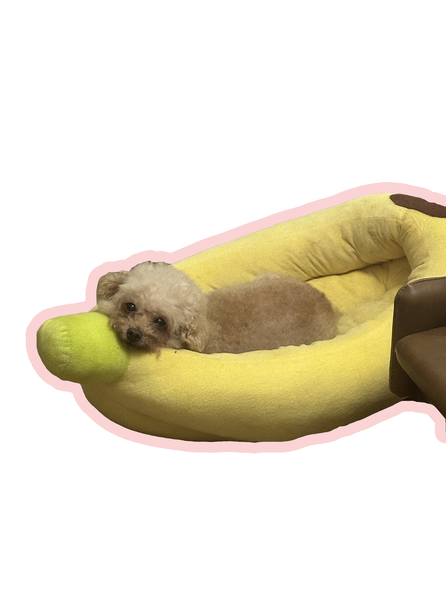
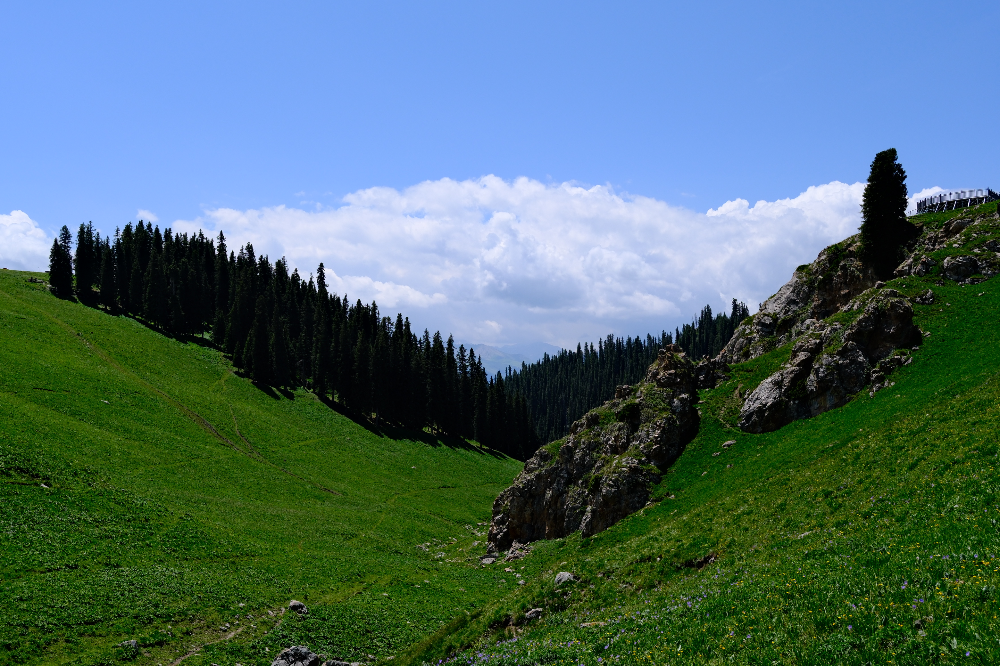
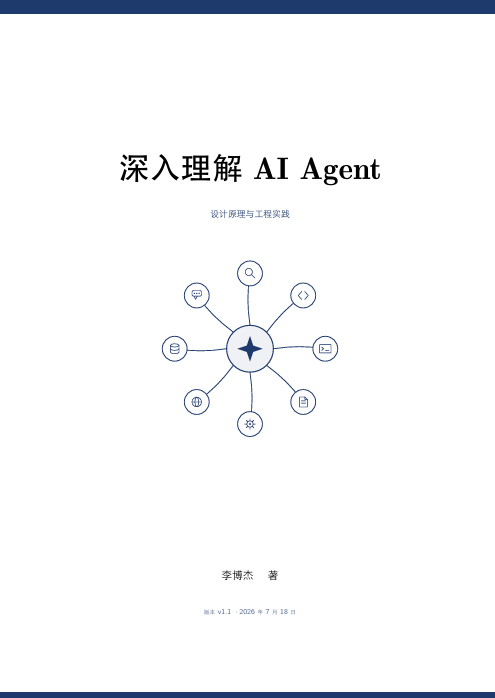
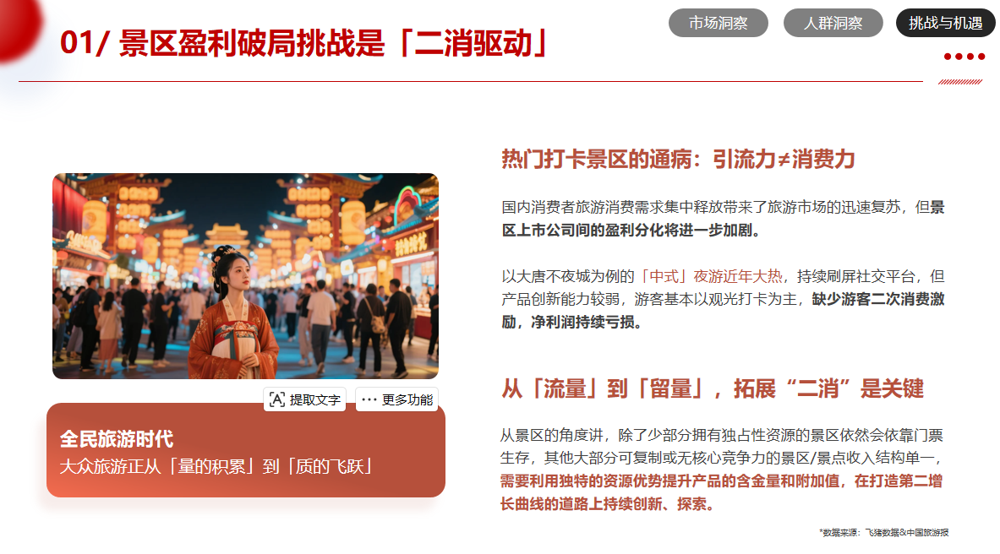
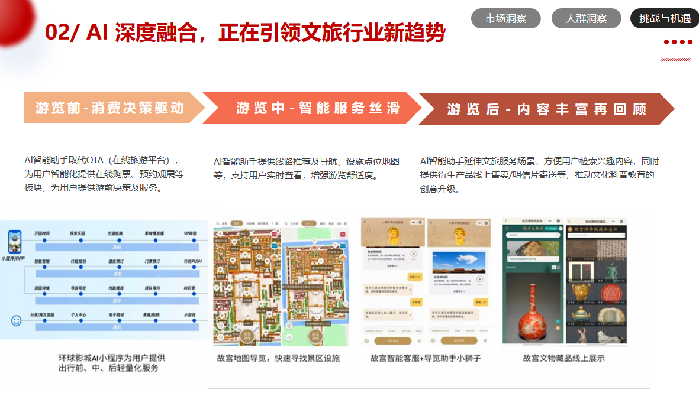
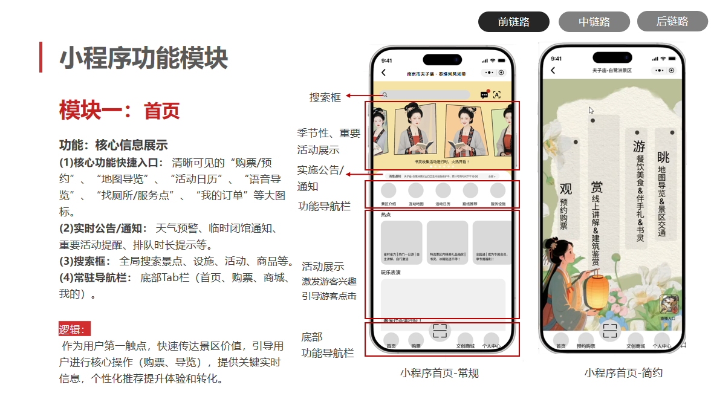
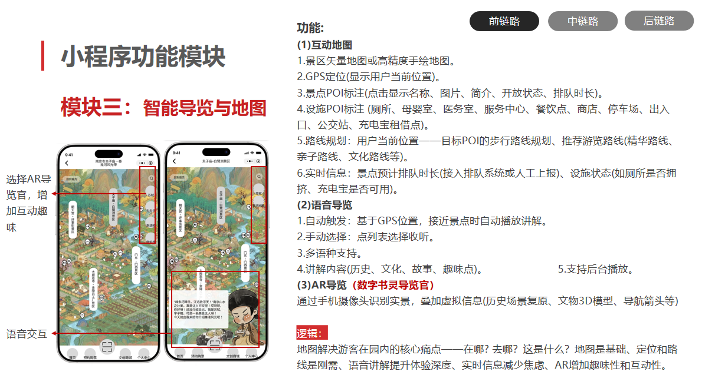

My Portfolio


My Portfolio

您好，我是朱佳荟，于今年 6 月份硕士毕业。
最近在读《深入理解 AI Agent》，书中写道，在 Sutton 描绘的宇宙进化链条中，智能体是那个能自我迭代的突变者。而 AI 产品经理就是那个为智能体设定"进化方向"的人。
如果说 Agent 是用代码重写代码，那 AI 产品经理就是用需求、边界和评测集，为它划定每一次进化的跑道。尘埃被动凝聚，生命盲目演化，但智能体可以选择方向——AI 产品经理的工作，就是帮它做对这道选择题。
宇宙花了 138 亿年走到智能体这一步，
而我希望，能让它走好下一步。
AI 产品经理实习 | 2025.09 - 2026.02
参与罗氏两项医疗Agent产品设计与评测体系建设，覆盖随访流程与医学RAG问答，通过权限分级、置信度阈值兜底与医疗免责声明等机制保障合规。
面向淋巴瘤科个案管理师及患者，在患者规模大、人工随访能力有限的情况下，通过标准化随访采集并自动生成周报。
核心工作：梳理随访业务流程并明确规则/AI/人工执行边界，设计基于患者阶段的动态问询与多轮追问流程；设计信息抽取→规则校验→重点指标分析→报告生成Pipeline。
面向神经内科罕见病医生及个案管理师，通过RAG问答智能体整合多源医学知识并提供可溯源问答能力。
核心工作：协同业务专家完成知识数据清洗；基于大模型构建FAQ库；构建评测集对RAG端到端问答效果进行批量跑测。




AI 产品经理实习 | 2025.05 - 2025.08
参与南京夫子庙小程序0-1产品建设，包含功能规划、购票链路及问答Agent设计，上线日活3k+。
从0-1打造智慧文旅小程序，将AI能力融入游览流程，提升游客实时互动与个性化游览体验。
核心工作：构建"苏东坡"人设问答智能体；梳理景点介绍构建景区知识库；参与小程序整体功能规划及三期产品路线设计，完成一期预约购票核心链路设计。
保持对国内外大模型迭代、多模态、Agent 等方向的敏感度，知道新技术能做什么、暂时做不好什么，确保产品方案不落后也不冒进。
不管是 C 端应用还是 B 端后台，看到好产品就习惯倒推它的需求文档长什么样——怎么定边界、怎么处理异常、怎么设计兜底。拆多了，自己写的时候逻辑自然清晰。
建筑学院
校园经历：参与《低碳居住建筑设计》等专业书籍编撰工作；担任建筑学院学科部干事，负责学院各类学生工作相关系列报道，重点参与"我为同学做实事"系列宣传工作，协助梳理学院为学生办实事的具体举措，采访记录同学受益案例，撰写系列报道稿件，同步配合学科部完成活动宣传、素材整理、信息传达等工作，助力学院学生工作落地见效，搭建学院与同学之间的沟通桥梁。
党委宣传部校报记者团 首席记者 · GPA 4.21 / 5
校园经历：担任党委宣传部校报记者团首席记者，参与陆增镛奖教师系列采访和校运动会系列采访，期间负责采访前的方案研讨、提纲设计与前期对接，现场完成跟拍、录音、提问等采访工作，采访后整理素材、撰写校报稿件，同时配合团队完成校报相关的素材整理与编辑工作，全程参与校园新闻宣传的全流程实操。
"一直游到海水变蓝。"
余华说这句话的时候，我大概还在图纸和比例尺之间，学着把一个人的生活动线翻译成墙、窗与光。建筑教给我的第一件事是：人不是住在空间里，人是住在关系里——门与门的距离，楼梯转角的停顿，一束下午四点的阳光落在餐桌的哪个位置。
后来我从那片由钢筋和混凝土构成的岸边出发，往更深处游。
AI 产品经理是我的新水域。起初它陌生得像另一种语言——向量、模型、智能体、上下文窗口——但游着游着我发现，我做的事情并没有变：我依然在"建造"，只是材料从砖石换成了数据与逻辑，空间从物理街道换成了数字界面。我依然在丈量人与世界的距离，依然在追问一个人按下某个按钮、说出某句话时，真正需要被回应的是什么。
从建筑到 AI，不是离开，是延伸。是把对"人如何栖居"的执念，从一座房子，放进一个可以无限生长的系统里。
我还在游。从图纸的白，游到代码的蓝，游到那些尚未被命名的体验里去。
——海水会变蓝的。我知道。
nice to meet you ✿
say hi, / let's build / something quiet / & sharp.